Глава 4. Вход и изход от конзолата
Автор
Борис Вълков
В тази тема...
В настоящата тема ще се запознаем с конзолата. Ще обясним какво представлява тя, кога и как се използва, какви са принципите на повечето програмни езици за достъп до конзолата. Ще се запознаем с някои от възможностите на Java за взаимодействие с потребителя. Ще разгледаме основните потоци за входно-изходни операции System.in, System.out и System.err, класът Scanner и използването на форматиращи низове за отпечатване на данни в различни формати.
Какво представлява конзолата?
Конзолата представлява прозорец на операционната система, през който потребителите могат да си взаимодействат с програмите от ядрото на операционната система или с другите конзолни приложения. Взаимодействието става чрез въвеждане на текст от стандартния вход (най-често клавиатурата) или извеждане на текст на стандартния изход (най-често на екрана на компютъра). Тези операции са известни още, като входно-изходни. Текстът, изписван на конзолата носи определена информация и представлява поредица от символи изпратени от една или няколко програми.
За всяко конзолно приложение операционната система свързва устройства за вход и изход. По подразбиране това са клавиатурата и екрана, но те могат да бъдат пренасочвани към файл или други устройства.
Комуникация между потребителя и програмата
Голяма част от програмите си комуникират по някакъв начин с потребителя. Това е необходимо, за да може потребителя да даде своите инструкции към системата. Съвременните начини за комуникация са много и различни, те могат да бъдат през графичен или уеб-базиран интерфейс, конзола или други. Както споменахме, едно от средствата за комуникация между програмите и потребителят е конзолата, но тя става все по-рядко използвана. Това е така, понеже съвременните средства за комуникация са по-удобни и интуитивни за работа.
Кога да използваме конзолата?
В някои случаи, конзолата си остава незаменимо средство за комуникация. Един от тези случаи е писане на малки и прости програмки, където по-важното е вниманието да е насочено към конкретния проблем, който решаваме, а не към елегантно представяне на резултата на потребителя. Тогава се използва просто решение за въвеждане или извеждане на резултат, каквото е конзолният вход-изход.
Как да стартираме конзолата?
Всяка операционна система си има собствен начин за стартиране на конзолата. Под Windows например стартирането става по следния начин:
Start -> (All) Programs -> Accessories -> Command Prompt
След стартиране на конзолата, трябва да се появи черен прозорец, който изглежда по следния начин:
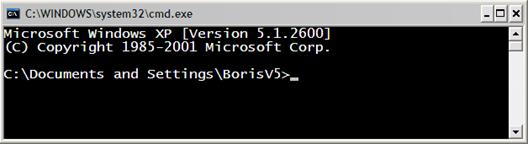
При стартиране на конзолата, за текуща директория се използва личната директория на текущия потребител, която се извежда като ориентир за потребителя.
Подробно за конзолите
Конзолата още наричана "Command Prompt" или "shell" или "команден интерпретатор" е програма на операционната система, която осигурява достъп до системни команди, както и до голям набор от програми, които са част от операционната система или са допълнително инсталирани.
Думата "shell" (шел) означава "обвивка" и носи смисъла на обвивка между потребителя и вътрешността на операционната система (ядрото).
Така наречените "обвивки", могат да се разгледат в две основни категории, според това какъв интерфейс могат да предоставят към операционната система.
- Команден интерфейс (CLI – Command Line Interface) – представлява конзола за команди (като например cmd.exe).
- Графичен интерфейс (GUI – Graphical User Interface) – представлява графична среда за работа (като например Windows Explorer).
И при двата вида, основната цел на обвивката е да стартира други програми, с които потребителят работи, макар че повечето интерпретатори поддържат и разширени функционалности, като например възможност за разглеждане съдържанието на директориите.
|
|
Всяка операционна система има свой команден интерпретатор, който дефинира собствени команди. |
Например при стартиране на конзолата на Windows в нея се изпълнява т. нар. команден интерпретатор на Windows (cmd.exe), който изпълнява системни програми и команди в интерактивен режим. Например командата dir, показва файловете в текущата директория:
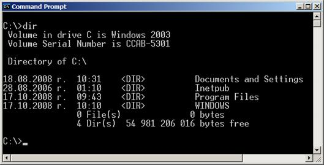
Основни конзолни команди
Ще разгледаме някои базови конзолни команди, които ще са ни от полза при намиране и стартиране на програми.
Конзолни команди под Windows
Командният интерпретатор (конзолата) се нарича "Command Prompt" или "MS-DOS Prompt" (в по-старите версии на Windows). Ще разгледаме няколко базови команди за този интерпретатор:
|
Команда |
Описание |
|
dir |
Показва съдържанието на текущата директория. |
|
cd <directory name> |
Променя текущата директория. |
|
mkdir <directory name> |
Създава нова директория в текущата. |
|
rmdir <directory name> |
Изтрива съществуваща директория. |
|
type <file name> |
Визуализираща съдържанието на файл. |
|
copy <src file> <destination file> |
Копира един файл в друг файл. |
Ето пример за изпълнение на няколко команди в командния интерпретатор на Windows. Резултатът от изпълнението на командите се визуализира в конзолата:
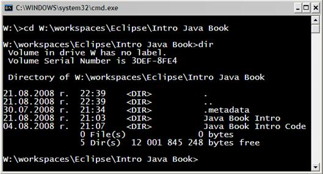
Конзолни команди под Linux
Командният интерпретатор в Linux се различава доста от този на Windows, но основните команди са подобни:
|
Команда |
Описание |
|
cd <directory name> |
Променя текущата директория. |
|
ls |
Показва съдържанието на текущата директория. |
|
mkdir <directory name> |
Създава нова директория в текущата. |
|
rm -r <directory name> |
Изтрива съществуваща директория заедно с всички файлове и поддиректории в нея рекурсивно. |
|
cat <file name> |
Показва съдържанието на файл. |
|
cp <src file> <destination file> |
Копира един файл в друг файл. |
Ето пример за изпълнение на няколко команди в командния интерпретатор на Linux. Ето пример за изпълнение на няколко Linux команди:

В примера е използван Cygwin. Той представлява колекция от инструменти, които се инсталират като разширение на Windows и могат да изпълняват Linux софтуер в Windows среда.
Cygwin може също да изпълнява системни Linux команди в идващия с него команден интерпретатор "Cygwin Bash Shell". При този интерпретатор, командата "cd" има една особеност. Налага се да се ползва обратна наклонена черта, ако името на директорията съдържа интервали.
Стандартен вход-изход
Стандартният вход-изход известен още, като "Standard I/O" e системен входно-изходен механизъм създаден още от времето на Unix операционните системи. За вход и изход се използват специални периферни устройства, чрез които може за се въвеждат и извеждат данни.
Когато програмата е в режим на приемане на информация и очаква действие от страна на потребителя, в конзолата започва да мига курсор, подсказващ за очакванията на системата.
По-нататък ще видим как можем да пишем Java програми, които очакват въвеждане на входни данни от конзолата.
Печатане на конзолата
В повечето програмни езици отпечатване и четене на информация в конзолата е реализирано по различен начин, но повечето решения се базират на концепцията за "стандартен вход" и "стандартен изход".
Стандартен вход и стандартен изход
Операционната система е длъжна да дефинира стандартни входно-изходни механизми за взаимодействие с потребителя. При стартиране на дадена програма, служебен код изпълняван преди тази програма е отговорен за отварянето (затварянето) на потоци, към предоставените от операционната система механизми за вход-изход. Този служебен код инициализира програмната абстракция, за взаимодействие с потребителя, заложена в съответния език за програмиране. По този начин стартираното приложение може да чете наготово потребителски вход от стандартния входен поток (в Java това е System.in), може да записва информация в стандартния изходен поток (в Java това е System.out) и може да съобщава проблемни ситуации в стандартния поток за грешки (в Java това е System.err).
Концепцията за потоците ще бъде подробно разгледана по-късно. Засега ще се съсредоточим върху теоретичната основа, засягаща програмния вход и изход в Java. За повече информация по темата вижте секцията "Четене от потока System.in".
Устройства за конзолен вход и изход
Освен от клавиатура, входът в едно приложение може да дойде от много други места, като например файл, микрофон, бар-код четец и др. Изходът от една програма може да е на конзолата (на екрана), както и във файл или друго изходно устройство, например принтер:
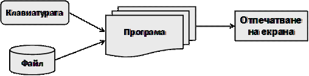
Ще покажем базов пример онагледяващ отпечатването на текст в конзолата чрез абстракцията за достъп до стандартния вход и стандартния изход, предоставена ни от Java:
|
System.out.println("Hello, this is Java!"); |
Резултатът от изпълнението на горния код би могъл да е следният:
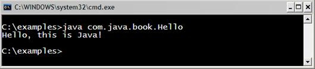
Потокът System.out
Класът java.lang.System има различни методи (класовете се разглеждат подробно в главата "Създаване и използване на обекти"), повечето са свързани със системни функционалности (взимане на свойства от операционната система, системно време и т.н.). Този клас е част от стандартните пакети на Java. Това което прави впечатление, е че класът има три публични, статични променливи (in, out и err). Причината тези полета да са публични и статични е да може да се използват директно, без да има нужда да се създава инстанция на класа System.
Всяко от полетата за стандартен вход-изход е от определен тип (клас), който ни определя позволените операции, които могат да бъдат извършвани. Най-използваните действия, са тези за четене и писане. Обектите System.out и System.err са от тип PrintStream и чрез тези обекти се извършват предимно операции за писане, докато обекта System.in е от тип InputStream и извършва предимно операции за четене.
Използване на print() и println()
Работата със съответните методи е безпроблемна, понеже може да се отпечатват всички основни типове (стринг, числени и примитивни типове):
Ето някой примери за отпечатването на различни типове данни:
|
// Print String System.out.println("Hello, this is Java");
// Print int System.out.println(5);
// Print double System.out.println(3.14159265358979); |
Резултатът от изпълнението на този код изглежда така:
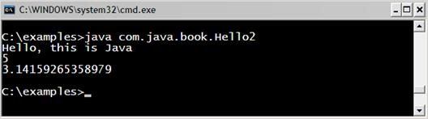
Както виждаме, чрез System.out.println е възможно да отпечатаме различни типове, това е така понеже за всеки от типовете има предефинирана версия на метода println() в класа PrintStream (може да се уверим сами като погледнем класа PrintStream в API-то на Java).
Разликата между print(…) и println(…), е че метода print(…) отпечатва в конзолата това, което му е подадено между скобите, но не прави нищо допълнително. Докато метода println(…) е съкращение на "print line", което означава "отпечатай линия". Този метод прави това, което прави print(…), но в допълнение отпечатва и нов ред. В действителност методът не отпечатва нов ред, а просто слага "команда" за преместване на курсора на позицията, където започва новият ред.
Ето един пример, който илюстрира разликата между print и println:
|
System.out.println("I love"); System.out.print("this "); System.out.print("Book!"); |
Изходът от този пример е:
|
I love this Book! |
Забелязваме, че изхода от примера е отпечатан на два реда, независимо че кодът е на три. Това е така, понеже на първия ред от кода използваме println(), по този начин се отпечатва "I love" и след това се минава на нов ред. В следващите два реда от кода се използва метода print, които печата, без да минава на нов ред и по този начин думите "this" и "Book!" си остават на един ред.
Конкатенация на стрингове
В общия случай Java не позволява използването на оператори върху стрингови обекти. Единственото изключение на това правило е операторът за събиране (+), който конкатенира (събира) два стринга, връщайки като резултат нов стринг. Това позволява навързването на верига от конкатениращи (+) операции. Следващия пример показва конкатенация на три стринга.
|
String age = "26"; // String, not number String text = "He is " + age + " years old."; System.out.println(text); |
Резултатът от изпълнението на този код е отново стринг:
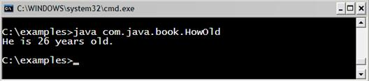
Конкатенация на смесени типове
Какво се случва, когато искаме да отпечатаме по-голям и по-сложен текст, който се състои от различни типове? До сега използвахме версиите на метода println за точно определен тип. Нужно ли е, когато искаме да отпечатаме различни типове наведнъж, да използваме различните версии на метода print за всеки един от тези типове? Не, това не е нужно! Решението на този въпрос е в следващия пример. Разликата на този пример с горния, е, че годините (age) са от целочислен тип, който е различен от стринг:
|
int age = 26; // int, no String String text = "He is " + age + " years old."; System.out.println(text); |
В примера се извършва конкатенация и отпечатване. Резултатът от примера е същият:
|
He is 26 years old. |
На втори ред от кода на примера виждаме, че се извършва операцията събиране (конкатенация) на стринга "He is" и целочисления тип "age". Опитваме се да съберем два различни типа. Това е възможно поради наличието на следващото важно правило.
|
|
Когато стринг участва в конкатенация с какъвто и да е друг тип, резултатът винаги е стринг. |
От правилото става ясно, че резултата от "He is" + age е отново стринг, след което резултатът се събира с последната част от израза "years old.". Така след извикване на верига от оператори за събиране, в крайна сметка се получава един стринг и съответно се извиква стринговата версия на метода println(…).
За краткост, горния пример може да бъде написан по следния начин:
|
int age = 26; System.out.println("He is " + age + " years old."); |
Особености при конкатенация на низове
Има ситуации при конкатенацията (съединяването) на низове, за които трябва да знаем и да внимаваме. Следващият пример показва изненадващо поведение на код, който на пръв поглед изглежда нормално:
|
String s = "Four: " + 2 + 2; System.out.println(s); // Four: 22
String s = "Four: " + (2 + 2); System.out.println(s); // Four: 4 |
Редът на изпълнение на операторите (вж. главата "Оператори и изрази") е от голямо значение! В примера първо се извършва събиране на "Four: " с "2" и резултатът от операцията е стринг. Следва повторна конкатенация с второто число, от където се получава неочакваното слепване на резултата "Four: 22" вместо очакваното "Four: 4". Това е така, понеже операциите се изпълняват от ляво на дясно и винаги участва стринг в конкатенацията.
За да се избегне тази неприятна ситуация може да се използват скоби, които ще променят реда на изпълнение на операторите и ще се постигне желания резултат. Скобите, като оператори с най-голям приоритет, принуждават извършването на операцията "събиране" на двете числа да настъпи преди конкатенацията със стринг, така коректно се извършва първо събиране на двете числа.
Посочената грешка е често срещана при начинаещи програмисти, защото те не съобразяват, че конкатенирането на символни низове се извършва отляво надясно, защото събирането на числа не е с по-висок приоритет.
|
|
Когато конкатенирате низове и събирате числа, използвайте скоби, за да укажете правилния ред на операциите. Иначе те се изпълняват отляво надясно. |
Форматиран изход с printf()
За отпечатването на дълги и сложни поредици от елементи е въведен специален метод наречен printf(…). Този метод е съкращение на "Print Formatted". Метода е известен и широко използван в средите на "C", макар и да не води началото си от този език за програмиране (а от BCPL).
Методът printf(…) има съвсем различна концепция от тази на стандартните методи за печатане в Java. Основната идея на printf(…) е да приеме специален стринг, форматиран със специални форматиращи символи и списък със стойностите, които трябва да се заместят на мястото на "форматните спецификатори". Ето как е дефиниран printf(…) в стандартните библиотеки на Java:
|
printf(<formatted string>, <param1>, <param2>, <param3>, …) |
Форматиран изход с printf() – примери
Следващият пример отпечатва два пъти едно и също нещо, но по различен начин:
|
String str = "Hello, Java!";
// Print normal System.out.print(str);
// Print formatted style System.out.printf("%s", str); |
Резултатът от изпълнението на този пример е:
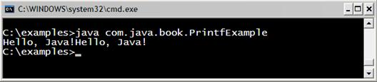
Виждаме като резултат, два пъти "Hello, Java!" на един ред. Това е така, понеже никъде в програмата нямаме команда за нов ред.
Първо отпечатваме по познатия ни начин, за да видим разликата с другия подход. Второто отпечатване е форматиращото printf(…). Първия аргумент на метода printf(…) е форматиращият стринг. В случая %s означава, да се постави str, на мястото на %s. Методът printf(…) е метод на променливата System.out, т. е. метод на класа PrintStream.
Следващият пример ще разясни допълнително концепцията:
|
String name = "Boris"; int age = 18; String town = "Plovdiv"; System.out.printf( "%s is %d years old from %s!\n", name, age, town); |
Резултатът от изпълнението на примера е:
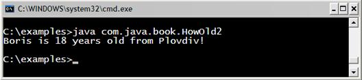
От сигнатурата на printf(…) видяхме че, първият аргумент е форматиращият низ. Следва поредица от аргументи, които се заместват на местата, където има процент, следван от буква (%s или %d). Първият %s означава да се постави на негово място първия от аргументите, подаден след форматиращия низ, в случая name. Следва %d, което означава, да се замести с първото целочислено число подадено в аргументите. Последният специален символ е отново %s, което означава да се замести със следващия по ред символен низ (town). Следва \n, което е специален символ, който указва минаване на нов ред.
Форматиращи низове
Както вече казахме, методите на System.out.printf използват форматните спецификатори (format specifiers) съставящи форматиращия низ.
|
printf("…<format specifier>…<format specifier>…", <parameters>) |
Форматиращите низове притежават мощен контрол върху показваната стойност и за това могат да придобият сложен вид. Следващата схема показва генералния синтаксис на форматните спецификатори.
|
%[argument_index$][flags][width][.precision]conversion |
Както забелязваме първо се поставя специалния символ процент (%), който задава започването на форматиращ спецификатор. Ще обясним всеки от форматните спецификатори, след което ще разгледаме още примери. Всички аргументи са незадължителни освен conversion.
- argument_index - целочислен тип показващ позицията на аргумента от "аргументния списък". Първият аргумент се индикира с "1$", втория с "2$" и т.н.
- flags - поредица от символи които модифицират изходния формат. (Примерни ефекти са, показването на числото да бъде винаги със знак, слагането на скоби на отрицателните числа и т.н.)
- width - неотрицателен целочислен тип показващ минималния брой символи, които трябва да се отпечатат.
- precision - неотрицателен целочислен тип ограничаващ броя на показваните символи. Този атрибут си променя поведението според conversion спецификатора. В случай на float определя броя цифри след запетаята.
- conversion – символ, показващ начина на конвертиране на аргумента. Набора от валидни конверсии зависи от типа.
Ще разгледаме таблици с валидните стойности за всеки един от форматните спецификатори. В първата колона ще показваме стойност, а втората колона ще обяснява какъв ще е изхода при прилагане на съответната стойност.
Стойности за форматния спецификатор
Ще покажем таблица с най-често използваните спецификатори и техни възможни стойности.
Конвертиране (conversion)
В таблицата са дадени някои форматни спецификатори и тяхното значение:
|
Конвертиране |
Описание |
|
|
b |
Булева стойност (true, false) |
|
|
o |
Осмична стойност |
|
|
x |
Шестнадесетична стойност |
|
|
c |
Знаков тип (char) |
|
|
s |
Стринг |
|
|
S |
Стринг, форматиран с главни букви |
|
|
f |
Число с плаваща запетая (float, double) |
|
|
e |
Число с плаваща запетая (с голяма точност) |
|
|
h |
Хеш кода на аргумента в шестнадесетичен вид |
|
|
n |
Нов ред "%n", е еквивалентно на "\n" |
|
|
t |
Префикс за конвертиране към дата. Тази конверсия се използва само в комбинация с някоя от долните опции. Пример: $tH, $tM, $tS |
|
|
t |
Y |
Година, форматирана с 4 цифри (2010) |
|
t |
y |
Година, форматирана с 2 цифри (10) |
|
t |
m |
Месец в интервал: 01 – 13 |
|
t |
B |
Месец, като стринг зависещ от локализацията (January) |
|
t |
b |
Месец, като "кратък" стринг, зависещ от локализацията |
|
t |
A |
Ден от седмицата, като стринг ("Sunday", "Monday") |
|
t |
a |
Ден от седмицата, като "кратък" стринг ("Sun", "Mon") |
|
t |
d |
Ден от месеца в интервал: 01 – 31 |
|
t |
j |
Ден от годината в интервал: 000 – 366 |
|
t |
H |
Час в интервал: 00 – 23 |
|
t |
l |
Час в интервал: 0 – 12 |
|
t |
M |
Минути в интервал: 00 – 59 |
|
t |
S |
Секунди във формат: 00 – 60 |
|
t |
L |
Милисекунди във формат: 000 – 999 |
|
t |
N |
Наносекунди във формат: 000000000 – 999999999 |
|
t |
p |
Спецификатор на деня. Пример: "am" или "pm" |
Флагове (flags)
В таблицата са дадени някои флагове и тяхното действие:
|
Конверсия |
Описание |
|
- |
Резултатът ще бъде ляво ориентиран |
|
+ |
Резултатът винаги ще включва знак (+, -) |
|
0 |
Резултатът ще се отмести с нули |
|
( |
Резултатът ще затвори в скоби отрицателните числа |
Форматиращи низове – примери
Ще разгледаме основни примери, използващи форматиране на стрингове. За всеки от примерите изхода е описан чрез "// Output: ", както и кратки разяснителни коментари поставени в скоби.
|
PrintingFormattedStrings.java |
|
public class PrintingFormattedStrings {
public static void main(String[] args) {
String name = "Boris"; int age = 18; String town = "Plovdiv";
System.out.printf("My name is %s. \n", name); // Output: My name is Boris.
System.out.printf("My name is %S. \n", name); // Output: My name is BORIS. (name in uppercase "%S")
System.out.printf( "%1$s is big town.\n" + "%2$s lives in %1$s.\n" + "%2$s is %3$d years old.\n", town, name, age);
// Output: Plovdiv is big town. // Boris lives in Plovdiv. // Boris is 18 years old.
int a = 2, b = 3; System.out.printf("%d + %d =", a, b); System.out.printf(" %d\n", (a + b)); // Output: 2 + 3 = 5 (two prints without new line)
System.out.printf("%d * %d = %d%n", a, b, a * b); // Output: 2 * 3 = 6 (with new line at end "%n")
float pi = 3.14159206f; System.out.printf("%.2f%n", pi); // Output: 3,14 (using [.precision] = 2)
System.out.printf("%.5f%n", pi); // Output: 3,14159 (using [.precision] = 5)
double colaPrice = 1.20; String cola = "Coca Cola"; double fantaPrice = 1.20; String fanta = "Fanta Bamboocha"; double kamenitzaPrice = 1.50; String kamenitza = "Kamenitza";
System.out.println("\nMenu:"); System.out.printf("1. %s – %.2f%n", cola, colaPrice); System.out.printf("2. %s – %.2f%n", fanta, fantaPrice); System.out.printf("3. %s – %.2f%n", kamenitza, kamenitzaPrice); System.out.println(); // Output: Menu: // 1. Coca Cola – 1,20 // 2. Fanta Bamboocha – 1,20 // 3. Kamenitza – 1,50
System.out.println("Next sentence will be" + " on a new line.");
System.out.printf("Bye, bye, %s from %s.%n", name, town);
// Output: Next sentence will be on a new line. // Bye, bye, Boris from Plovdiv. } } |
Форматиране на дати и часове – примери
Следващият пример показва форматиране на дати и часове:
|
PrintingFormattedDates.java |
|
public class PrintingFormattedDates {
public static void main(String[] args) {
System.out.printf("The time is: %1$tH:%1$tM:%1$tS.\n", new java.util.Date()); // The time is: 13:54:36. (ends with new line "\n")
Date date = new Date(); System.out.printf("The date in Day/Month/Year is: %1$td/%1$tm/%1$tY.\n", date); // The date in Day/Month/Year is: 09/08/2008.
System.out.printf("The date and time is: %1$tA %1$tI:%1$tM%1$tp %1$tB/%1$tY. \n", date); // The date and time is: Събота 05:08pm Август/2008. } } |
Форматиране на числа и дати – още примери
Ето и още примери за печатане на конзолата чрез форматиращи низове:
|
MoreExamplesWithFormatting.java |
|
public class MoreExamplesWithFormatting {
public static void main(String[] args) {
long n = 120582; System.out.format("%d%n", n); // --> "120582" System.out.format("%08d%n", n); // --> "00120582" System.out.format("%+8d%n", n); // --> " +120582" System.out.format("%,8d%n", n); // --> " 120,582" System.out.format("%+,8d%n%n", n); // --> "+120,582"
double pi = Math.PI; System.out.format("%f%n", pi); // --> "3.141593" System.out.format("%.3f%n", pi); // --> "3.142" System.out.format("%10.3f%n", pi); // --> " 3.142" System.out.format("%-10.3f%n", pi); // --> "3.142" System.out.format(Locale.ITALIAN, "%-10.4f%n%n", pi); // --> "3,1416"
Calendar c = Calendar.getInstance(); System.out.format("%tB %te, %tY%n", c, c, c); // --> "Август 9, 2008"
System.out.format("%tl:%tM %tp%n", c, c, c); // --> "5:29 pm" } } |
Форматиращи низове и локализация
При използването на форматиращи низове е възможно една и съща програма да отпечатва различни стойности в зависимост от настройките за локализация в операционната система. Например, при отпечатване на месеца от дадена дата, ако текущата локализация е българската, ще се отпечата на български, примерно "Август", докато ако локализацията е американската, ще се отпечата на английски, примерно "August".
При стартирането си Java виртуалната машина автоматично извлича системната локализация на операционната система и ползва нея за четене и писане на форматирани данни (числа, дати и други).
Локализацията може да се променя ръчно чрез класа java.util.Locale. Ето един пример, в който отпечатваме едно число и текущата дата и час по американската и по българската локализация:
|
Locale.setDefault(Locale.US); System.out.println("Locale: " + Locale.getDefault().toString()); System.out.printf("%.2f\n", 1234.56); System.out.printf("%1$tA %1$tI:%1$tM%1$tp %1$tB-%1$tY.\n\n", new Date());
Locale.setDefault(new Locale("bg", "BG")); System.out.println("Locale: " + Locale.getDefault().toString()); System.out.printf("%.2f\n", 1234.56); System.out.printf("%1$tA %1$tH:%1$tM %1$tB-%1$tY.\n", new Date()); |
Резултатът от изпълнението на този код е следният:
|
Locale: en_US 1234.56 Saturday 05:24pm November-2008.
Locale: bg_BG 1234,56 Събота 17:24 Ноември-2008. |
Вход от конзолата
Както в началото на темата обяснихме, най-подходяща за малки приложения е конзолната комуникация, понеже е най-лесна за имплементиране. Стандартното входно устройство е тази част от операционната система, която контролира от къде програмата ще получи своя вход. По подразбиране "стандартното входно устройство" чете своя вход от драйвер "закачен" за клавиатурата. Това може да бъде променено и стандартният вход може да бъде пренасочен към друго място, например към файл.
Всеки език за програмиране има механизъм за четене и писане в конзолата. Обектът, контролиращ стандартния входен поток в Java, е System.in.
От конзолата можем да четем различни данни:
- текст;
- числени типове, след конвертиране.
Четене от потока System.in
Да си припомним, че системният клас System има статична член-променлива in. Тази член променлива е от тип InputStream. Това е базов клас (предшественик) на всички класове, представящи входен поток от байтове. Методите на този клас и най-вече System.in.read() се използват за четене от стандартния вход.
В чистия му вариант System.in.read() почти не се използва, защото има абстракции, които улесняват четенето от конзолата. В последните версии на Java се появяват допълнителни улеснения за четене, но идеологията винаги си остава една и съща.
Тази схема показва взаимодействието между трите стандартни променливи предназначени за вход (STDIN) и изход (STDOUT, STDERR) в Java. STDERR е стандартният изход за грешки. На него може да печатаме по следния начин:
|
System.err.println("This is error!"); |
Ще разгледаме примери, четящи през System.in.read(), за да може да разберем по-детайлно процеса по четене, след което ще разгледаме и улесненията предоставени от новите версии на Java. Ето един пример, в който четем директно от System.in:
|
EchoExample.java |
|
public class EchoExample {
public static void main (String [] args) throws java.io.IOException {
int ch; System.out.print ("Enter some text: "); while ((ch = System.in.read()) != '\n') { System.out.print((char) ch); } } } |
Резултатът от изпълнението на примера е следният:
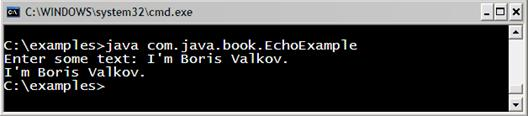
Най-общо тази програма чете текст, въведен от потребителя, и го принтира в конзолата. Ще разгледаме програмата по-подробно.
Първо извеждаме помощен текст в конзолата ("Enter some text:"), за да уведомим потребителя какво точно трябва да въведе. След това извикваме в цикъл System.in.read(). Четенето чрез метода read() става байт по байт. Влизаме в безкрайно четене (while loop), докато не се натисне клавиша за край на ред ("\n"). Ако този клавиш се натисне, четенето прекратява и се изписва прочетеното. Получава се нещо като "ехо".
Четенето на символ започва при въведен край на ред
Изходът от програмата изглежда малко странно. Нали след като прочетем даден символ веднага го отпечатваме и след това веднага четем следващ символ и т.н. Би трябвало след всеки прочетен символ да се отпечатва същия символ, но това не се случва. Въведените символи се прочитат наведнъж, след натискане на [Enter] и след това се отпечатват наведнъж. Причината за това е, че четенето от конзолата в Java става ред по ред, а не символ по символ. Макар и да имаме метод за четене на един символ, той изчаква въвеждането на цял ред и натискането на [Enter] и чак тогава започва четенето на въведените до момента символи, които се натрупват в специален буфер. Ако не знаем тази особеност, може дълго да се чудим защо горната програма има такова странно поведение.
Методът System.in.read()
Метода read() не приема аргументи и връща int. Методът връща 7-битов ASCII код (ако стандартното входно устройство е клавиатура) или 8-битов байт (ако стандартното входно устройство е пренасочено към файл). И в двата случая System.in.read() превръща числото в 32-bit integer и връща резултата.
Например при операционна система Windows, когато стандартното входно устройство е клавиатура ще се случи следното: Когато натискаме клавиши от клавиатура "контролирана" от Windows, операционната система съхранява натиснатите клавиши като 7-bit ASCII код във вътрешен "клавишен буфер". Този буфер може да съхранява приблизително 16 ASCII кода и е организиран, като структура от данни "опашка" (първи влязъл – първи излязъл). System.in.read() взима 7-bit ASCII код от главата на клавишния буфер и изтрива този код от буфера. Този 7-bit ASCII код се конвертира до int от метода System.in.read(), като върнатите 7 бита се запълва с 25 празни бита, за да се получи 32-битовия int който се връща от метода System.in.read(). Ако имаме "cast" към char, тогава този 32-битов int се конвертира до 16-битов Unicode, каквото е представянето на char в Java. Повторно извикване на System.in.read() взима следващия ASCII код и така нататък.
Ако се окаже, че в клавишния буфер няма никакви ASCII кодове, които System.in.read() да прочете, методът блокира и минава в режим на изчакване докато не дойде следващ ASCII код. Програмите използващи метода System.in.read() за четене от конзола трябва да проверяват дали не е натиснат клавишът за край на ред. В Windows това е клавишът [Enter]. При натискането му, Windows слага в буфера "carriage return" код (ASCII 13) следван от "new-line" код (ASCII 10).
Класът Scanner
Този клас е въведен от Java 5.0 насам, за да улесни четенето на текст и числови данни от конзолата, както и от файлове. Класът представлява опростяване (абстракция) на сложното до скоро четене през потоци и буфери. Класът java.util.Scanner има различни методи улесняващи форматирания вход от конзолата:
- nextInt() / nextLong() за четене на целочислени типове
- nextFloat() / nextDouble() за четене на числа с плаваща запетая
- nextLine() за четене на цял символен низ, връща String
- hasNext***() проверява дали съществува съответния тип (long, float, …)
Всеки от методите може да хвърли IllegalStateException, ако Scanner класът е вече затворен "scanner.close()". Подробно на изключенията, като начин за известяване за грешка или друг проблем ще се спрем в главата "Обработка на изключения".
Всеки от методите next***() може да хвърли NoSuchElementException ако входния поток свърши, но търсения елемент не съществува (int, long, line). В случая с четенето от конзолата входния поток не може да свърши, но в случай че четем от файл, при достигане на края на файла свършва и потокът, свързан с него. Повече за потоци и файлове ще научите в главата "Текстови файлове".
Методите, които очакват число, могат да предизвикат изключение InputMismatchException, ако това, което са получили, не може да се преобразува до желания числен тип.
Четене на цял ред чрез BufferedReader
Първо ще разгледаме пример показващ стария подход за четене на ред от конзолата (преди въвеждането на класа Scanner):
|
ReadingStringsOldStyle.java |
|
public class ReadStringsOldStyle {
public static void main(String[] args) throws IOException {
// Open the standard input BufferedReader br = new BufferedReader( new InputStreamReader(System.in));
System.out.print("Please enter your first name: "); String firstName = br.readLine();
System.out.print("Please enter your last name: "); String lastName = br.readLine();
System.out.printf("Hello, %s %s!\n", firstName, lastName);
// br.close(); - Do not close stream reading System.in! } } |
Резултатът от изпълнението на примера може да изглежда по следния начин:
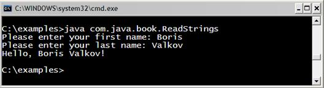
Няма да се спираме подробно на този пример, понеже има по-лесни начини за четене от конзолата. Можем само да забележим, че има "навързване" на потоци и буферен четец. Потокът InputStreamReader представлява "мост" между байтови (какъвто е InputStream от System.in) и символни потоци. Обикновено потокът InputStreamReader се обвива от BufferedReader с цел улесняване на четенето. Чрез BufferedReader може да се чете цял ред от символи наведнъж, без да е нужно да се пишат цикли (както в предишния пример).
Четене на цял ред чрез Scanner
Следващият пример е аналогичен, но ще използваме класа Scanner:
|
ReadingStringsNewStyle.java |
|
public class ReadingStringsNewStyle {
public static void main(String[] args) {
Scanner input = new Scanner(System.in);
System.out.print("Please enter your first name: "); String firstName = input.nextLine();
System.out.print("Please enter your last name: "); String lastName = input.nextLine();
System.out.printf("Hello, %s %s!\n", firstName, lastName);
// input.close(); - Don't close Scanner reading System.in! } }
// Output: Please enter your first name: Boris // Please enter your last name: Valkov // Hello, Boris Valkov! |
Виждаме колко лесно става четенето на текст от конзолата с класа Scanner. Голяма част от сложността и недостатъците на старите подходи са скрити зад този клас.
- Първо създаваме един обект от тип java.util.Scanner. В конструктора на този обект подаваме "стандартния входен поток" (System.in) от който ще четем.
- Отпечатваме текст в конзолата, който пита за името на потребителя.
- Извършваме четене на цял ред от конзолата, чрез метода nextLine().
- Повтаряме горните две стъпки за фамилията.
- След като сме събрали необходимата информация я отпечатваме в конзолата.
- В случай когато ресурсът е файл или нещо друго (Readable), след приключване на работа с класа Scanner го затваряме с метода close(), който от своя страна има отговорността да извика close() на подадения му в конструктора поток (или Closeable). Обаче в примера, който разгледахме, използваме системен ресурс System.in! Особеното за системните ресурси, е, че те "надживяват" кода на нашата програма и отговорността за тяхното отваряне и затваряне се поема от системен код, опериращ преди и след нашата програма. Това е причината close() методът в примерите да е коментиран, понеже не трябва да се извиква.
При четенето от конзолата има една особеност: тя не трябва да бъде изрично нито отваряна, нито затваряна, защото това се прави от операционната система.
|
|
В конструктора на Scanner се подава System.in. Както вече обяснихме, когато се извика close() на класа Scanner, по спецификация се затваря потокът, от който се чете, но това е стандартният вход (System.in) и ако той бъде затворен, вече няма да може да се чете от него. Следващи опити за четене от System.in ще доведат до грешки! Те могат да бъдат различни изключения, свързани с четене от затворен поток: IOException, IllegalStateException или NoSuchElementException. |
Обработката на изключения е тема на една от следващите глави и засега няма да ви объркваме допълнително с тази трудна за начинаещите материя. В примерите по-горе за простота игнорираме евентуално възникващите грешки.
|
|
В почти никоя книга за програмиране няма да видите коректна обработка на изключения. Освобождаването на използваните ресурси също не винаги е дадено правилно. Една от причините за това е запазване на кода лесен за четене. Затова, НЕ копирайте код от учебни примери директно във вашата продукционна програма! В реални програми, правилно обработване на изключения и пълно освобождаване на ресурси често са подценявани! Това е много тежка част от програмирането, в която често ГРЕШАТ и най-добрите! |
Четене на числа
Четенето на числа с класа Scanner е също толкова лесно, колкото и четенето на цял ред. Ето един пример:
|
ReadingNumbers.java |
|
public class ReadingNumbers {
public static void main(String[] args) {
Scanner input = new Scanner(System.in);
System.out.print("a = "); int a = input.nextInt();
System.out.print("b = "); int b = input.nextInt(); // Output: a = 5 // b = 6
System.out.printf("%d + %d = %d%n", a, b, a + b); System.out.printf("%d * %d = %d%n", a, b, a * b); // Output: 5 + 6 = 11 // 5 * 6 = 30
System.out.print("f = "); float f = input.nextFloat(); System.out.printf("%d * %d / %f = %f%n", a, b, f, a * b / f); } } |
Резултата от изпълнението на програмата би могъл да е следният (при условие че въведем 5; 6 и 7.5 като входни данни):
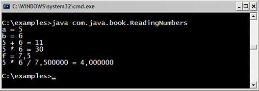
Четене на число през класа Scanner става аналогично на четене на стринг. В този пример се четат две числа от конзолата, след което се извършват различни математически операции с тях и резултатите се отпечатват на екрана с форматирания изход (който разгледахме в началото на темата).
В този пример особеното е, че използваме методите за четене на числени типове и при грешно подаден резултат (например текст), ще възникне грешка (изключение) InputMismatchException. Това важи с особена сила при четенето на реално число, защото разделителят, който се използва между цялата и дробната част, не е строго фиксиран.
|
|
Разделителят за числата с плаваща запетая зависи от текущите езикови настройки на операционната система (Regional and Language Options в Windows). При едни системи за разделител може да се счита символът запетая, при други точка. Въвеждането на точка вместо запетая ще предизвика InputMismatchException. |
Вход и изход на конзолата – примери
Ще разгледаме още няколко примера за вход и изход от конзолата.
Печатане на писмо
Това е един практичен пример показващ конзолен вход и форматиран текст под формата на писмо.
|
PrintingLetter.java |
|
public class PrintingLetter {
public static void main(String[] args) { Scanner input = new Scanner(System.in);
System.out.printf("Enter person name: "); String person = input.nextLine();
System.out.printf("Enter book name: "); String book = input.nextLine();
String from = "Authors Team";
System.out.printf(" Dear %s,%n", person); System.out.printf("We are pleased to inform " + "you that \"%2$s\" is the best Bulgarian book. \n" + "The authors of the book wishes you good luck %s!%n", person, book);
System.out.println(" Yours,"); System.out.printf(" %s", from); } } |
Резултатът от изпълнението на горната програма би могъл да следния:
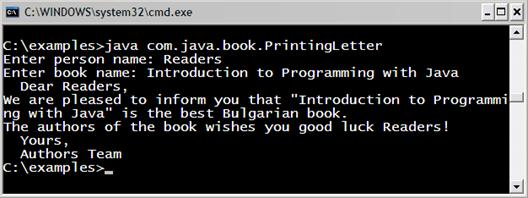
В този пример имаме предварителен шаблон на писмо. Програмата "задава" няколко въпроса на потребителя и по този начин прочита от конзолата нужната информация, за да отпечата писмото, като замества форматиращите спецификатори с попълнените от потребителя параметри. Следва печатане на цялото писмо в конзолата.
Лице на правоъгълник или триъгълник
Ще разгледаме още един пример: изчисляване на лице на правоъгълник или триъгълник.
|
CalculatingArea.java |
|
public class CalculatingArea {
public static void main(String[] args) { Scanner input = new Scanner(System.in);
System.out.println("This program calculates " + "the area of a rectangle or a triangle");
System.out.print("Enter a and b (for rectangle) " + "or a and h (for triangle): ");
int a = input.nextInt(); int b = input.nextInt();
System.out.print("Enter 1 for a rectangle or " + "2 for a triangle: ");
int choice = input.nextInt(); double area = (double) (a * b) / choice; System.out.println("The area of your figure is " + area); } } |
Резултатът от изпълнението на горния пример е следният:
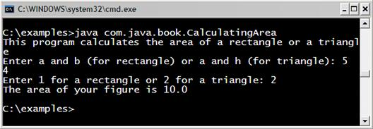
Упражнения
1. Напишете програма, която чете от конзолата три числа от тип int и отпечатва тяхната сума.
2. Напишете програма, която чете от конзолата радиуса "r" на кръг и отпечатва неговия периметър и обиколка.
3. Дадена фирма има име, адрес, телефонен номер, факс номер, уеб сайт и мениджър. Мениджърът има име, фамилия и телефонен номер. Напишете програма, която чете информацията за компанията и нейния мениджър и я отпечатва след това на конзолата.
4. Напишете програма, която чете от конзолата две цели числа (integer) и отпечатва, колко числа има между тях, такива, че остатъкът им от деленето на 5 да е 0.
5. Напишете програма, която чете от конзолата две цели числа и отпечатва по-голямото от тях. Реализирайте програмата без използването на сравнение. Забележка: задачата изисква малко да помислите!
6. Напишете програма, която чете пет числа и отпечатва тяхната сума.
7. Напишете програма, която чете пет числа и отпечатва най-голямото от тях. Забележка: трябва да използвате конструкция "if", която до момента не сме разгледали.
Решения и упътвания
1. Използвайте класа Scanner.
2. Използвайте константата Math.PI и добре известните формули от планиметрията.
3. Форматирайте текста с printf(…) подобно на този от примера с писмото, който разгледахме.
4. Има два подхода за решаване на задачата:
Първи подход: Използват се математически хитрини за оптимизирано изчисляване, базирани на факта, че всяко пето число се дели на 5.
Вторият подход е по-лесен, но работи по-бавно. Чрез for цикъл може да се обиколи и провери всяко число в дадения интервал. За целта трябва да прочетете от Интернет или от главата "Цикли" как се използва for цикъл.
5. Нека числата са a и b. Използвайте следните преобразувания: a=a-b; b=b+a; a=b-a.
6. Можете да прочетете чистата в пет различни променливи и накрая да ги сумирате. За да няма повторение на код, можете да разгледате конструкцията за цикъл "for" от главата "Цикли".
7. Трябва да използвате конструкцията за сравнение "if", за която можете да прочетете в Интернет или от следващите глави на книгата. За да избегнете повторението на код, можете да използвате конструкцията за цикъл "for", за която също трябва да прочетете в книгата или в Интернет.